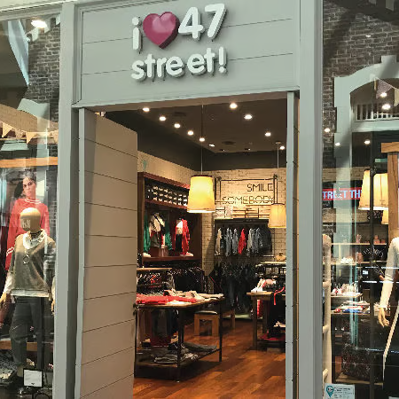
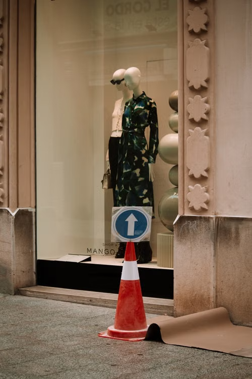
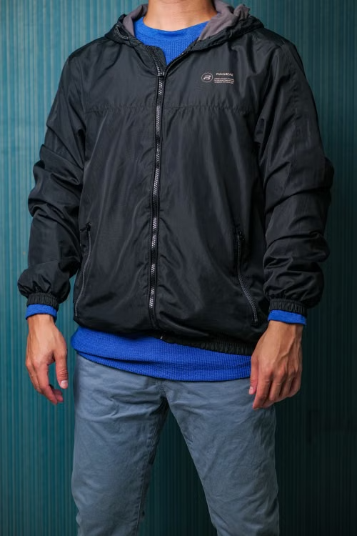
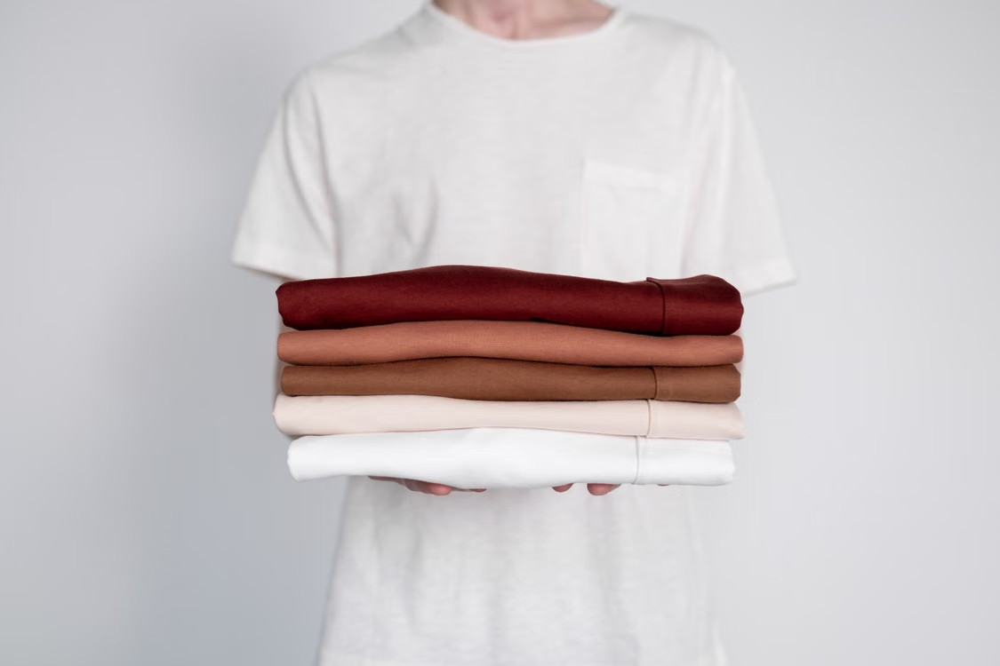

Una estética Y2K, moda circular y línea genderless

Nació en 1986 para vestir a las adolescentes. Cómo combina locales propios, franquicias y socios en la región, y por qué renueva su estética en cada temporada.

Nació en 1986 para vestir a las adolescentes. Cómo combina locales propios, franquicias y socios en la región, y por qué renueva su estética en cada temporada.

Producción rápida, reposición constante y colecciones que cambian todo el tiempo. Cómo funciona la maquinaria que redefinió el negocio de la moda.
Lotes chicos, datos en tiempo real y precios mínimos. Te explicamos el negocio detrás de la app de ropa que más creció en los últimos años.

La marca hizo de la sustentabilidad su estrategia comercial. Un caso sobre cómo los valores también pueden ser un modelo de negocio.

Sin seguir las tendencias de temporada, la marca japonesa construyó un imperio con prendas simples. Por qué lo básico puede ser el mejor negocio.
Acá va la bajada de la nota 6 de la sección Caso de estudio. Escribí acá un resumen breve de la nota que ocupe tres líneas de texto.
Accedé a todas las notas exclusivas para suscriptores.